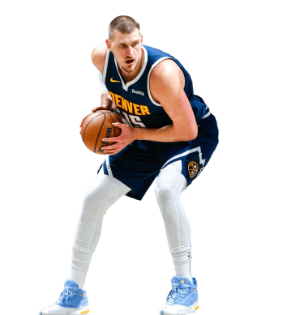

El baloncesto fue creado en 1891 por James Naismith en Estados Unidos. Su objetivo era diseñar un deporte que se pudiera jugar en interiores durante el invierno. Con el tiempo, evolucionó desde un juego simple con canastas de melocotones hasta convertirse en un deporte global. La expansión del baloncesto fue impulsada por ligas profesionales como la NBA, que ha llevado el deporte a niveles de popularidad mundial.
El baloncesto se juega entre dos equipos de cinco jugadores cada uno. El objetivo es anotar puntos introduciendo el balón en el aro del equipo contrario. Cada canasta vale 2 o 3 puntos (dependiendo de la distancia). Los tiros libres valen 1 punto. El partido se divide en períodos (cuartos). No se puede correr con el balón sin botarlo (driblar).
Para jugar bien al baloncesto, los jugadores deben dominar varias habilidades: Dribleo: controlar el balón mientras se avanza. Pase: mover el balón entre compañeros. Tiro: lanzar el balón hacia el aro. Defensa: impedir que el rival anote. Estas habilidades requieren coordinación, velocidad y toma de decisiones rápida.
El baloncesto es practicado en casi todos los países. Eventos internacionales como los Juegos Olímpicos han contribuido a su difusión. Además, jugadores de distintos continentes han destacado en ligas profesionales.
Algunos jugadores han marcado la historia del baloncesto: Michael Jordan: considerado por muchos el mejor de todos los tiempos. LeBron James: conocido por su versatilidad y longevidad. Kobe Bryant: símbolo de disciplina y mentalidad competitiva.
Jugar baloncesto aporta múltiples beneficios: Mejora la condición física. Desarrolla habilidades sociales y trabajo en equipo. Aumenta la coordinación y reflejos. Ayuda a reducir el estrés.
